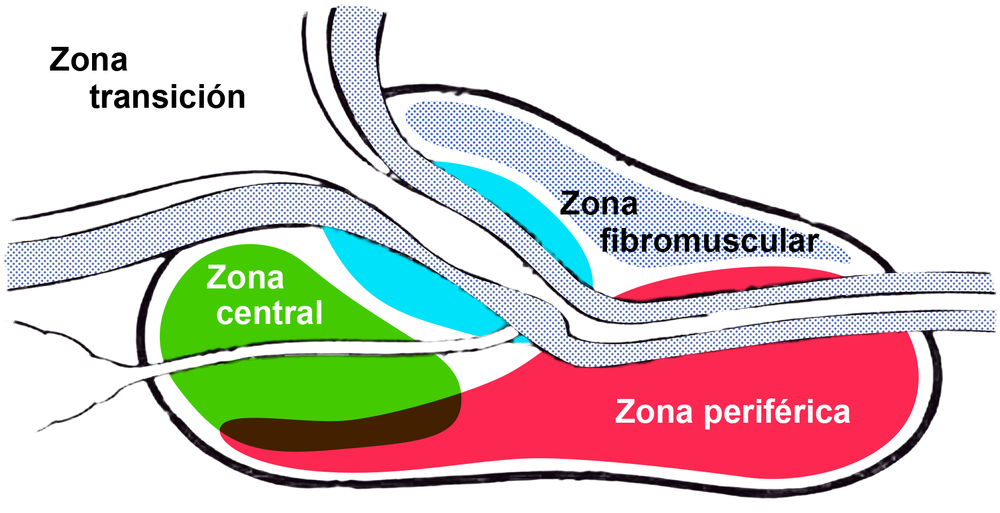

La próstata es una glándula situada en la pelvis entre el cuello vesical y el diafragma urogenital. Posee el tamaño de una nuez, y tiene como función, junto a los testículos y las vesículas seminales, producir y expulsar el semen. Trabajaría como un esfínter capaz de ejerce presión para que el semen sea expulsado por la uretra al exterior y también tiene la capacidad de cerrar el paso de la vejiga para impedir que ésta libere su contenido durante el coito.
Está atravesada por la uretra, que conecta la vejiga con el exterior a través del pene, y permite evacuar la orina. Mide aproximadamente 3 cm en el eje vertical, 2 cm en el eje antero-posterior y 4 cm transversalmente y tiene un peso de unos 20 gr. Tanto su tamaño como su peso tienen un crecimiento casi constante a partir de los 20 años.
Modelo de McNeal con las distintas zonas anatómicas de la próstata
El punto de referencia en este modelo es la uretra, dividida en dos porciones de similar longitud, la proximal y la distal, angulada en el veru montanum. La novedad del modelo de McNeal con respecto a otros modelos radica en la identificación del componente no glandular de la próstata (alrededor de un tercio del órgano), compuesto por todo el tejido de los esfínteres uretrales, el cuello vesical y sobre todo por la zona fibromuscular anterior que se extiende desde las fibras longitudinales externas del cuello vesical y contacta con la uretra.
El componente glandular propiamente dicho se distribuye en zonas:
La próstata es un órgano compuesto por estructuras glandulares exocrinas complejas que tienen una porción secretora y otra ductal que conduce la secreción hacia el lugar de su acción. Segrega de 0.5 a 2 cc diarios, con lenta acumulación intraglandular, que es expelida bruscamente en la eyaculación. Está compuesta por diferentes tipos de células, que es importante conocer ya que definirá la etiopatogenia de los tumores prostáticos:
Localizadas en la porción más profunda y paralelas a la membrana basal, de pequeño tamaño y escaso citoplasma. Su citoesqueleto contiene citoqueratina 34-b-E12, expresan HER-2 y HER-3 y representan el 70% de las células en estado proliferativo del acino-ducto, siendo menos del 10% de todas las células epiteliales de la próstata. La membrana citoplasmática es rica en ATPasa y carecen de actina y miosina.
Tienen receptores de estrógenos y progestágenos sin receptores androgénicos, si a ello unimos la expresión de Bcl-2 (gen antiapoptótico), se puede concluir que son células que no precisan de la testosterona para mantenerse. Sin embargo, existe una pequeña proporción de ellas que sí tendría receptores de andrógenos, y este subgrupo de células basales podrían ser estimuladas y diferenciarse hacia células secretoras. Esta capacidad de diferenciación ha hecho que las células basales que pertenecen a este subgrupo hayan sido consideradas células precursoras o stem cell.
Las células intermedias (también llamadas de amplificación) corresponden a unas células con características inmunohistoquímicas entre las células basales y las células diferenciadas, que podrían ser una forma de transición entre las células basales y las células secretoras maduras finales, y jugar un papel importante en el equilibrio entre apoptosis y proliferación.
Con los actuales estudios inmunohistoquímicos se han subdividido a las células intermedias en:
Células intermedias progenitoras tempranas (CK5 y CK18 positivas, c-metpositivo, sin receptores androgénicos).
Células intermedias progenitoras tardías (CK5 negativas, CK18 de irregular expresión, c-met positivo e irregular expresión de receptores androgénicos).
Las células secretoras corresponden al estado final de diferenciación de las células acino-tubulares, son cilíndricas, y representan el 75% de todas las células epiteliales de la próstata, pero sólo un 10% de las células que proliferan en el acino. Su citoesqueleto contiene las citoqueratinas 8 y 18 y segregan antígeno prostático específico (PSA), fosfatasa ácida prostática (PAP), antígeno prostático específico de membrana (PSMA), ácido cítrico, fibrinolisina, fosfatasa ácida, etc.
La mayor parte de los receptores androgénicos están en estas células, y expresa el gen Bcl-x (proapoptótico) careciendo del gen Bcl-2.
Las células neuroendocrinas se hallan de una forma dispersa y aislada, predominantemente en el compartimiento basal, con o sin comunicación con la luz acino-tubular, y con extensiones filiformes dendríticas hacia las células de alrededor.
Con métodos convencionales de tinción, sólo muy ocasionalmente, se observan gránulos eosinófilos citoplasmáticos. Con métodos de inmunohistoquímica se observa que gran parte de estas células expresan cromogranina A, sinaptofisina, serotonina, y algunas de ellas calcitonina-like, bombesina-like, somatostatina-like, proteínas relacionadas con la paratohormona y calcitonina. Junto a esta riqueza de productos con función hormonal la habitual presencia de enolasa neuronal específica indicaría la capacidad de responder a los estímulos nerviosos.